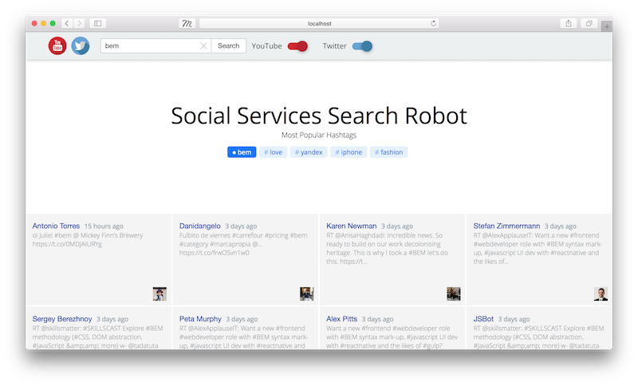

Creating a dynamic BEM project
Introduction
Many modern applications exchange data in online mode, partially or fully reloading the page afterwards.
This article explains how to develop BEM projects that deal with dynamic data.
We will cover how to create two applications:
Hello, World app — A quick start for creating dynamic applications.
Social Services Search Robot — An application that searches for tweets and videos by keyword.
You will need:
Note: This article will not look at layout and client JS issues.
Hello World application
This is a dynamic application that outputs the words "Hello, World!" thus showing that it can launch and complete input/output operations.
Let's create this application and then extend it to the Social Services Search Robot.
To create a Hello World application:
Clone the template repository bem-express.
git clone https://github.com/bem/bem-express.git bem-projectNote: This example uses
bem-express2.00.Go to the project directory.
cd bem-projectDelete the version history for the source repository.
rm -rf .gitInitialize your own Git repository.
git init
Set dependencies.
npm install
Build the package and launch the server.
npm run dev
Note: The project is built using ENB.
When the application is launched, the terminal shows a message that the server is running on port 3000:
Server is listening on 3000.Note: If port 3000 is busy, you can change it (for example, to 8000):
PORT=8000 npm run dev
The following is launched on your computer:
Server — Responsible for dynamic data processing.
Nodemon — Tracks changes in the file structure and restarts the server.
Chokidar — Tracks changes in the *.blocks/ directories and rebuilds the project structure.
Livereload — Reloads the page in the browser.
Open the browser and enter the address: localhost:3000.
The page that opens contains:
Index page content footer content
Open the file server/index.js and change the code starting from
app.get('/', function(req, res):// ... app.get('/', function(req, res) { + var hello = 'Hello'; + var world = 'World'; render(req, res, { view: 'page-index', title: 'Main page', meta: { description: 'Page description', og: { url: 'https://site.com', siteName: 'Site name' } }, + hello: hello, + world: world }) }); // ...Open the common.blocks/page-index/page-index.bemtree.js file and edit it:
block('page-index').content()(function() { // Getting the data from `this` global object var data = this.data; // Returning the received data: `data.hello: 'Hello'`, `data.world: 'World'` return data.hello + ', ' + data.world + '!';});After saving, the server reloads automatically, and the page content is changed to:
Hello, World! footer content
The Hello World application is ready.
Note: If you had difficulties creating the application, search for a solution on the forum. If you can't find an answer, ask the experts in the forum.
Social Services Search Robot application
This is a dynamic application that displays recent tweets and videos by keyword.
The purpose of this application is to show the relationship between:
Data and interface in a BEM project.

Application flow
The application flow can be visualized as follows:

The user sends a query to the server.
The application receives data from the Twitter Search API and YouTube Data API that matches the user's query.
The application passes the data to the BEMTREE template engine, which transforms the data to BEMJSON.
The application passes BEMJSON to the BEMHTML template engine, which transforms the BEMJSON to HTML.
The application returns the HTML page to the user.
BEM technologies used
We will use the following technologies:
BEMDECL — Technology for describing declarations in BEM.
DEPS — Technology for describing dependencies in BEM.
BEMTREE — Template engine that transforms data to BEMJSON.
BEMHTML — Template engine that transforms BEMJSON to HTML.
i-bem.js — JavaScript framework for BEM.
BEMDECL
Defines the list of BEM entities used on the page.
In BEM, this list is called a declaration. The purpose of the declaration is to define what to include in the build and in what order.
Declarations are defined in files with the .bemdecl.js extension.
Example of a declaration from the Hello World application:
// The `desktop.bundles/index/index.bemdecl.js` file
exports.blocks = [
{ name: 'root' }
];
As the example shows, the index.bemdecl.js file only defines the root block. This doesn't mean there are no other blocks on the page. You should treat the root block as the central "entry point" for the compiler. Other BEM entities are included in the build by dependencies. In the DEPS technology, declarations define the block from which the project build starts.
This example shows how a project is built by dependencies (from the Hello World application):
root(DECL) # The compiler searches for the index.bemdecl.js file
|
└──> root(DEPS) # The compiler searches for the root.deps.js file
|
└──> page(DEPS) # The compiler searches for the page.deps.js file
|
├──> header(DEPS) # The compiler searches for the header.deps.js file
| |
| └──> ...
|
├──> body(DEPS) # The compiler searches for the body.deps.js file
| |
| └──> ...
|
└──> footer(DEPS) # The compiler searches for the footer.deps.js file
|
└──> ...
Learn more about the BEMDECL technology.
DEPS
Defines dependencies between BEM entities that are spread out across the project's file system and not listed in the declarations.
Dependencies are described as a JavaScript object in files with the .deps.js extension.
Example of dependencies for the root block from the Hello World application:
// File `common.blocks/root/root.deps.js`
({
shouldDeps: 'page'
})
Learn more about the DEPS technology.
BEMTREE
Part of the bem-xjst template engine that transforms data to BEMJSON.
Templates are defined in BEMJSON format in files with the .bemtree.js extension.
Input and output of the template engine:

Learn more about the BEMTREE technology.
BEMHTML
Part of the bem-xjst template engine that transforms the BEMJSON description to HTML.
Templates are defined in files with the .bemhtml.js extension.
Input and output of the template engine:

Learn more about the BEMHTML technology.
i-bem.js
The client JavaScript framework for web development using the BEM methodology.
The JavaScript code is described in files with the .js extension.
It allows you to:
Develop a web interface based on blocks, elements, and modifiers.
Describe a block's logic in the declarative style, as a set of states.
Easily integrate the JavaScript code with BEMHTML templates and CSS.
Flexibly redefine the behavior of library blocks.
Learn more about the i-bem.js technology.
The projects' file system
Looks like this:
bem-project/
.enb/ # Config files for the ENB compiler
common.blocks/ # Basic implementations of blocks
desktop.bundles/ # Directories of project bundles
development.blocks/ # Blocks that are integrated during development
node_modules/ # Installed Node modules (packages)
server/ # Directory with server code
static/ # Root directory for distribution of static files
.bemhint.js # Bemhint linter configuration
.borschik # Borschik compiler configuration
.eslintignore # Excluding files and directories in ESLint
.eslintrc # ESLint configuration
.gitignore # Excluding files and directories in Git
.stylelintrc # Stylelint configuration
.travis.yml # Automatically starting linters in Continuous Integration
nodemon.json # Nodemon package configuration
package.json # Describing a project for npm
README.md # Text description of the project
Creating the application
Changing the project's file structure
Before moving on to work with the Twitter Search API and the YouTube Data API, let's change the structure of the Hello World application.
Create the following files and subdirectories in the server directory:
server/ + controllers/ # Controllers + index.js # Controller for processing requests and rendering HTML + helpers/ # Helpers + index.js # Entry point for helper modules (empty) + twitter.js # Helper module for working with the Twitter Search API (empty) + youtube.js # Helper module for working with the YouTube Data API (empty) + middleware/ # Middleware modules + auth.js # Module for checking authentication on YouTube (empty) + app.js # Module for middleware integration + auth.js # Module for YouTube authentication (empty) config.js index.js rebuild.js render.js + routes.js # Module for routing the requestsNote: Files marked with the E (Empty) flag will be needed later.
Add this code to the controllers/index.js file.
Add this code to the app.js file.
Add this code to the routes.js file.
Replace the content of the index.js file with this.
Note: The
index.jsfile should contain only the functionality for launching the application and listening for requests on the port.
When you complete all the steps, the localhost:3000 address should still show the page with the following content:
Hello, World! footer content
Note: If your code doesn't work, look for typos.
Installing additional modules
To run the application, install the following modules:
express — Provides functionality for building web applications.
passport — Provides authentication strategies in Node.js applications.
passport-youtube-v3 — Provides a Youtube authentication strategy using the Youtube account and OAuth 2.0 tokens.
twitter — Client library for working with the Twitter REST API.
googleapis — Client library for working with the Google REST API.
moment — JavaScript library for syntax analysis, validation, and date formatting.
To install the modules, use the command:
$ npm install express passport passport-youtube-v3 twitter googleapis@^20.0.1 moment --save
Getting an OAuth token for Twitter
Twitter allows applications to make authenticated requests on behalf of the application itself. The API is accessed via the OAuth 2.0 open authorization protocol.
To get an OAuth token:
Read the documentation.
Register the application.
Get the keys: Consumer Key and Consumer Secret.
Encode the
<Consumer Key>:<Consumer Secret>string using Base64.
Use the token and keys you got in requests you send to the Twitter Search API. Learn more in Working with the Twitter Search API.
Important: Save the token and keys you received: Consumer Key and Consumer Secret. You will need them for the application configuration file.
Getting an OAuth token for Google
Google allows applications to make authenticated requests on behalf of the application itself. The API is accessed via the OAuth 2.0 open authorization protocol.
Note: The passport-youtube-v3 module is responsible for receiving and updating the OAuth token in exchange for the authorization code using a POST request.
To get an OAuth token:
Read the documentation.
Register the application and get a Client ID and Client Secret.
Set the callback URL (in our case it is
http://localhost:3000) in your application's account.
Use the Client ID and Client Secret you got in the requests you send to the YouTube Data API. Learn more in Working with the YouTube Data API.
Important: Save the keys you received: Client ID and Client Secret. You will need them for the application configuration file.
Configuring the application
Add the
servicesfield in the server/config.js file.module.exports = { staticFolder: 'static', defaultPort: 3000, cacheTTL: 30000, sessionSecret: 'REPLACE_ME_WITH_RANDOM_STRING', + services: { + twitter: { + consumer_key: '*****', + consumer_secret: '*****', + bearer_token: '*****' + }, + youtube: { + client_id: '*****', + client_secret: '*****', + redirect_url: 'http://localhost:3000' + } + } };Replace asterisks with the received keys and tokens.
Hide the server/config.json file from the Git version control system so you don't accidentally add private keys to the file repository.
# файл .gitignore server/config.js
Working with the Twitter Search API
The Twitter Search API lets you find tweets published over the last 7 days.
To configure the application for interacting with the API:
Open the controllers/index.js file and replace its content with this.
Add the following code in the helpers/index.js file:
module.exports = { twitter: require('./twitter') };Add this code in the helpers/twitter.js file.
Working with the YouTube Data API
The YouTube Data API lets you search videos by keyword.
To configure the application for interacting with the API:
Add this code in the server/auth.js file.
Edit the server/routes.js file:
var router = require('express').Router(), controllers = require('./controllers'), + passportYouTube = require('./auth'), + middleware = require('./middleware/auth'), + isAuthenticated = middleware.isAuthenticated; router - .get('/ping/', function(req, res) { - res.send('ok'); - }) - .get('/', controllers.getContent); + .get('/auth/youtube', passportYouTube.authenticate('youtube')) + .get('/auth/youtube/callback', passportYouTube.authenticate('youtube', + {failureRedirect: '/error', failureFlash: true }), (req, res) => { + res.redirect('/'); + }) + .get('/', isAuthenticated, controllers.getContent); module.exports = router;Replace the content of the controllers/index.js file with this.
Edit the helpers/index.js file:
module.exports = { twitter: require('./twitter'), + youtube: require('./youtube') };Add this code in the helpers/youtube.js file.
Add the following content in the middleware/auth.js file:
module.exports = { isAuthenticated: function(req, res, next) { if (req.isAuthenticated()) return next(); return res.redirect('/auth/youtube'); } };
Layout
This article doesn't cover layout and the JavaScript client. Describing layout issues would make this document unreasonably large and difficult to use.
To prepare the layout, follow these steps:
Delete all the blocks from the common.blocks directory.
Clone these blocks to the common.blocks directory.
Add logo.svg in the static directory.
Restart the server:
npm run dev.
Social Services Search Robot application is ready.
Note: If you had difficulties creating the application, search for a solution on the forum. If you can't find an answer, ask the experts in the forum.
FAQ
How do I encode a string using the Base64 method?
To encode a string:
Create a string in the format:
<Consumer Key>:<Consumer Secret>.Example
xvz1evFS4wEEPTGEFPHBog:L8qq9PZyRg6ieKGEKhZolGC0vJWLw8iEJ88DRdyOgNote: To get the Consumer Key and Consumer Secret, go to Keys and Access Tokens for your application.
Start a terminal or Git Bash (for Windows users).
Run the command
echo -n "xvz1evFS4wEEPTGEFPHBog:L8qq9PZyRg6ieKGEKhZolGC0vJWLw8iEJ88DRdyOg" | base64.Copy the code you get.
Example
eHZ6MWV2RlM0d0VFUFRHRUZQSEdFS2hab2xHQzB2SldMdzhpRUo4OERSZHlPZw==
Note: If you have any difficulties, use the online resource base64encode.org.
How do I get an OAuth token?
To get the token:
Install and run Postman.
Choose the POST request type.
Enter the server address (for Twitter —
https://api.twitter.com/oauth2/token).Go to the Headers tab.
Add the
AuthorizationandContent-Typeheaders with the corresponding values.Key Value Authorization Basic Content-Type application/x-www-form-urlencoded;charset=UTF-8 Note: Basic indicates the basic authorization method.
Go to the Body tab → Choose the
x-www-form-urlencodedoption.Enter the
grant_typerequest body with theclient_credentialsvalue in the Key field.Click the Send button.
The OAuth server returns the token in JSON format:
{
"token_type": "bearer",
"access_token": "AAAAAAAAAAAAAAAAAAAAAA%2FAAAAAAAAAA%3DAAAAAAAAAAAAAAAAAA"
}
Important: Save the token you received for the configuration file.